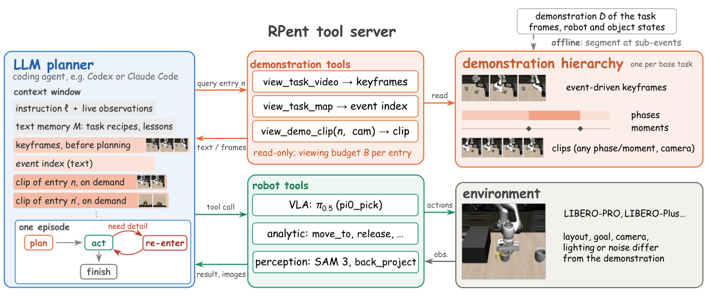

The agent gets one demonstration video. It reads an outline before planning and opens one clip whenever a step needs detail.
Each demonstration is indexed offline at four levels. The agent reads the coarse levels once, then returns for one clip at a time.

Keyframes and the phase map. No clip yet.
view_task_videoview_task_mapOne clip of the current sub-goal.
view_demo_clipText memory can record that a grasp failed. It cannot show how a grasp is done. A video can.
Hundreds of frames, re-read at every turn.
A few keyframes skip the frames around each contact.
Structure before acting, contact frames only at that step.
Pick a phase or a moment to see the clip the agent would get.
phase 1 [0,62) open: approach phase 2 [62,109) closed: opens flat_stove_1 phase 3 [109,203) open: retreat phase 4 [203,262) closed: carries moka_pot_1 into flat_stove_1_burner phase 5 [262,272) open: hold moments: grasp 1 (62), open flat_stove_1 (100), release 1 (109), grasp 2 (203), release 2 (262), end (271) goal: (And (Turnon flat_stove_1) (On moka_pot_1 flat_stove_1_cook_region))
Playback pauses where the agent opened the demonstration. The clip it asked for plays beside the robot.
phase 2 [62,109) gripper closed: opens flat_stove_1 phase 4 [203,262) gripper closed: carries moka_pot_1 into flat_stove_1_burner moments: grasp 1 (62), open flat_stove_1 (100), release 1 (109), grasp 2 (203), release 2 (262)
The agent’s message appears here.
Seven clips in this episode. A clip that comes back was requested again.
Eight cells, 50 episodes each. Two-proportion z-test: z = 2.97, p = 0.003.
The gains sit in the three cells where HarnessVLA is weakest.
Recursive access: up to +12. Other forms: at most +2.
120 variants, 86.7% to 95.8%.
97% of the 400 episodes re-enter the demonstration.
Why, in 100 sampled re-entries:
Share of all clip views, %.
@misc{bao2026rvicl,
title = {Recursive Video In-Context Learning
for Agentic Robot},
author = {Bao, Wenrui and Liu, Xinxin and
Xu, Bingxin and Shang, Yuzhang},
year = {2026},
note = {Preprint}
}